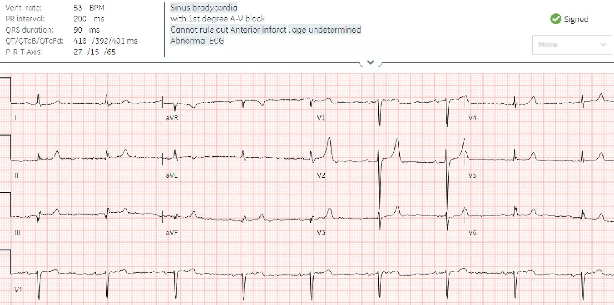
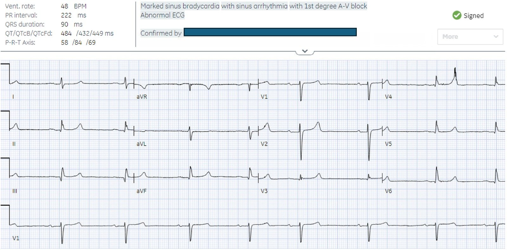
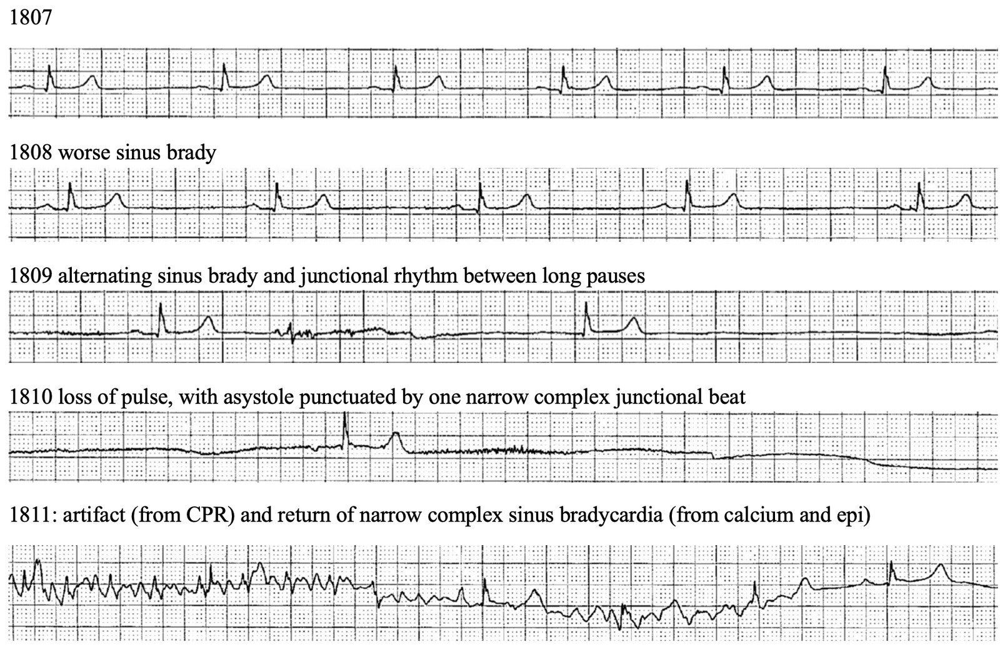
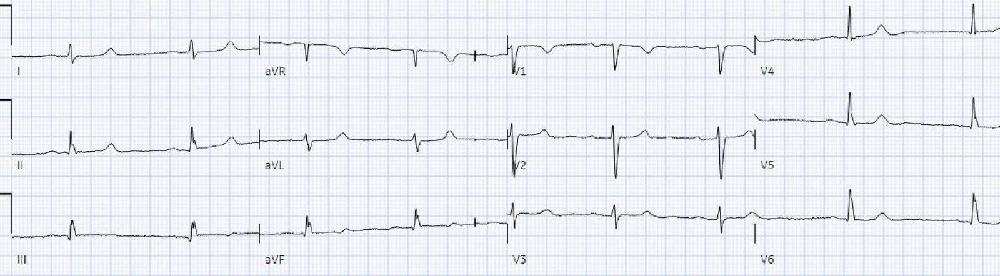
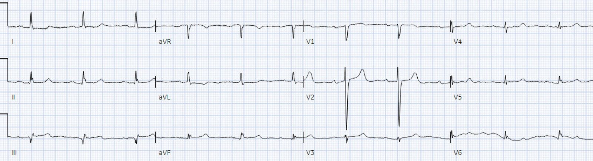
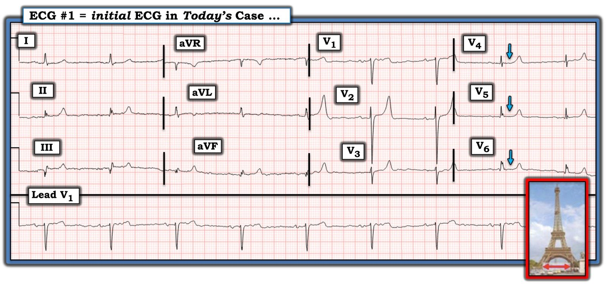

10/02/2025 — Kali 6.2 với QRS hẹp: có chỉ định dùng calci không?
Bản dịch tiếng Việt của bài "Potassium 6.2 with narrow QRS: any indication for calcium?" – Dr. Smith’s ECG Blog. Giữ nguyên toàn bộ 7 hình ảnh của bản gốc.
Tác giả: Jesse McLaren
Một
bệnh nhân 80 tuổi có đái tháo đường/tăng huyết áp/xơ gan đến phòng khám của bệnh viện để chọc tháo dịch màng bụng định kỳ, sau thủ thuật bệnh nhân xuất hiện
buồn nôn và ngất, được cho là do cơn phản xạ phế vị (vasovagal) từ thủ thuật.
Bệnh nhân gần đây được tăng liều candesartan để điều trị tăng huyết áp, đồng thời cũng đang dùng spironolacton và nadolol.
Một điện tâm đồ được ghi:


Bạn nghĩ gì?
Có
nhịp chậm xoang, khoảng PR ở giới hạn trên, QRS hẹp; trục/tăng tiến sóng R
bình thường; điện thế thấp ở các chuyển đạo trước tim, và sóng T nhọn kín đáo (rõ nhất ở V2, nhưng mọi sóng T đều đối xứng với đáy hẹp). Không có
điện tâm đồ cũ để so sánh – nhưng nhịp chậm, PR kéo dài và sóng T nhọn
đều có thể do tăng kali máu.
Smith: Sóng T của tăng kali máu không nhất thiết phải cao; chúng chỉ đơn giản có đáy hẹp, và đây là yếu tố chính góp phần tạo nên vẻ nhọn của chúng. Những sóng T này có đáy hẹp và nhọn nhưng không cao.
Nhưng bệnh nhân có điện tâm đồ QRS hẹp này có cần calci không nếu kali
chỉ là 6.2?
Bệnh
nhân được khám ba giờ sau đó tại khoa cấp cứu (ED), với dấu hiệu sinh tồn lúc phân loại cho thấy BP 50 và BP
106/60. Không có đau bụng khi ấn sau chọc tháo dịch màng bụng nhưng bệnh nhân
vẫn còn buồn nôn, và điện tâm đồ ghi lại như sau:


Nhịp chậm
nặng hơn một chút nhưng không có thay đổi nào khác. Vì QRS hẹp và
kali chỉ 6.2 từ phòng khám, bệnh nhân được điều trị bằng dịch truyền, insulin và dextrose nhưng
không dùng calci. Xét nghiệm tại khoa cấp cứu cho thấy K lặp lại là 6.6 ngay lúc bệnh nhân đang được điều trị, nên không thực hiện thêm biện pháp nào.
Hai giờ
sau, bệnh nhân trở nên lơ mơ và monitor cho thấy những thay đổi nhanh chóng sau:


Điện tâm đồ sau
ROSC (tái lập tuần hoàn tự nhiên)


K lặp lại
là 6.4 và bệnh nhân được dùng thêm insulin/dextrose/calci rồi nhập ICU. Điện tâm đồ
theo dõi cho thấy nhịp chậm xoang đã hết nhưng PR vẫn còn kéo dài:


Điện tâm đồ tăng kalimáu và hội chứng BRASH
Đây là
lần tôi bị “dội gáo nước lạnh” nhiều năm trước về tầm quan trọng của việc đọc điện tâm đồ trong
tăng kali máu, và về những nguy hiểm của hội chứng BRASH.
Ở trường
y và trong thời gian nội trú, tôi được dạy (và hiện vẫn còn nhiều ví dụ
trên mạng về những infographic tương tự) rằng điện tâm đồ trong tăng kali máu trải qua một
chuỗi thay đổi từ từ, tiến triển và có thể dự đoán được, tương quan với
nồng độ kali huyết thanh – từ sóng T nhọn khi tăng nhẹ, đến mất sóng P
và QRS giãn rộng khi tăng vừa, rồi sóng hình sin khi tăng nặng,
và chỉ sau đó mới đến ngừng tim. Nhưng bệnh nhân này đã tiến triển thành nhịp chậm–vô tâm thu QRS hẹp dai dẳng và ngày càng xấu đi,
mà trước đó chỉ có những thay đổi điện tâm đồ kín đáo và kali ban đầu chỉ 6.2. Một lời
nhắc tốt về khuyến cáo dùng calci khi K>6 kèm bất kỳ thay đổi điện tâm đồ nào
(lúc bệnh nhân được khám lần đầu) hoặc K>6.5 bất kể điện tâm đồ (lúc kết quả xét nghiệm
lặp lại trả về).[1]
Trong một
tổng quan về tăng kali máu tại khoa cấp cứu, mọi biến cố bất lợi đều xảy ra trước khi dùng calci
và thường kèm nhiều dấu hiệu tăng kali máu (như điện tâm đồ đầu tiên) – với các yếu tố dự báo mạnh nhất không
chỉ là QRS rộng, mà còn là nhịp chậm và/hoặc nhịp bộ nối.[2] Điều lạ là ACLS
không đưa việc cân nhắc calci vào phác đồ xử trí nhịp chậm, trong khi calci có thể
đã ngăn được cơn ngừng tim và chính calci cùng với epinephrin đã giúp đạt ROSC.
Một
bài học khác đối với tôi là tình trạng lâm sàng xấu đi không tương xứng với
điện tâm đồ và nồng độ kali ban đầu, đặc trưng cho vòng xoắn bệnh lý của hội chứng
BRASH [3]. Bệnh nhân này có:
– Bradycardia (nhịp chậm)
do nadolol (và có thể nặng thêm bởi trương lực phế vị do buồn nôn
sau chọc tháo dịch màng bụng), nặng thêm bởi tăng kali máu, và góp phần gây sốc
– Renal failure (suy thận)
do tăng liều candesartan, làm tăng kali máu nặng thêm
– AV nodal blockade (ức chế nút
AV) do nadolol, nặng thêm bởi tăng kali máu
– Shock (sốc),
do nhịp chậm và tăng kali máu, làm suy thận nặng thêm
– Hyperkalemia (tăng kali máu),
do spironolacton/candesartan và AKI (tổn thương thận cấp) mới, làm nặng thêm tất cả những điều trên
Nhìn
lại – và để tham khảo về sau – một bệnh nhân đang dùng thuốc ức chế nút AV và thuốc giữ kali,
đến viện với nhịp chậm và huyết áp thấp, cùng những thay đổi điện tâm đồ tăng kali máu kín đáo
là một ứng viên kinh điển của hội chứng BRASH – cần điều trị ngay lập tức
tất cả các thành phần, kể cả calci – ngay cả khi chỉ có thay đổi điện tâm đồ kín đáo và nồng độ kali ở mức vừa. Và ngay cả khi không có sóng T nhọn kín đáo, nhịp chậm thứ phát do tăng kali máu
vẫn là một đặc điểm nguy cơ cao.
Điều cầnnhớ
1. Tăng kali máu có thể gây nhiều bất thường về tần số/nhịp (bao gồm nhịp chậm, nhịp bộ nối hoặc nhịp QRS rộng), dẫn truyền (PR và QRS kéo dài), trục, và bất thường tái cực (bao gồm sóng T nhọn, hoặc kiểu hình sao chép Brugada (Brugada phenocopy)) – và nhiều bất thường cùng lúc báo hiệu nguy cơ cao.
2. Tăng kali máu cần dùng calci nếu >6.5 bất kể
điện tâm đồ, hoặc >6 kèm bất kỳ thay đổi điện tâm đồ nào – đặc biệt chú ý đến nhịp chậm,
nhịp bộ nối, hoặc QRS rộng.
3. Cân nhắc hội chứng BRASH, vốn có thể gây mất ổn định
lâm sàng không tương xứng với điện tâm đồ hay nồng độ kali.
4. Xem bên dưới
Bình luận của Smith:
Xem Ca 3 của bài này, ca bệnh cho thấy:
1) dễ nhầm lẫn sóng T của tái cực sớm với sóng T của tăng kali máu như thế nào và
2) ngay cả khi chỉ có sóng T nhọn, tăng kali máu vẫn có thể dẫn đến rung thất như thế nào.
HyperKalemia with Cardiac Arrest. Peaked T waves: Hyperacute (STEMI) vs. Early Repolarizaton vs. Hyperkalemia (Tăng kali máu kèm ngừng tim. Sóng T nhọn: tối cấp (STEMI) so với tái cực sớm so với tăng kali máu)
Hãy nhận ra những dấu hiệu kín đáo của tăng kali máu và, nếu có, điều trị ngay bằng calci!
Tài liệu tham khảo
1. Lindner và cs.
Acute hyperkalemia in
the emergency department: a summary from a Kidney Disease: Improving Global Outcomes
conference. Tạp chí Eur J Emerg Med, 2020.
2. Durfey và cs. Severe hyperkalemia: can the
electrocardiogram risk stratify for short-term adverse events. Tạp chí West J Emerg Med,
2017.
3. Farkas và cs. BRASH syndrome: Bradycardia, Renal Failure,
AV blockade, Shock, and Hyperkalemia. Tạp chí J Emerg Med, 2020.

===================================
BÌNH LUẬN CỦA TÔI, bởi KEN GRAUER, MD (10/2/2025):
===================================
Ca bệnh hôm nay của BS. McLaren là một lời nhắc quan trọng về những cạm bẫy then chốt trong điều trị tăng kali máu.
- Nhằm khơi gợi thảo luận — tôi tập trung bình luận vào một số hàm ý lâm sàng bổ sung của điện tâm đồ ban đầu, ngoài những điều đã được BS. McLaren điểm qua trong phần bàn luận ở trên.
Chẩn đoán tăng kali máu chưa bao giờ bị nghi ngờ trong ca bệnh hôm nay vì:
- i) Điện tâm đồ ban đầu (được trình bày lại ở Hình 1) — gợi ý mạnh tăng kali máu đáng kể.
- ii) K+ huyết thanh ban đầu = 6.2 mEq/L trong một mẫu không bị tán huyết.
- iii) Bệnh nhân có nhiều “yếu tố thuận lợi” cho tăng kali máu. Những yếu tố này bao gồm 3 loại thuốc được biết có thể làm tăng kali máu nặng thêm (tức là Aldactone — một thuốc ARB — và một thuốc chẹn ß không chọn lọc) — kèm việc gần đây tăng liều thuốc ARB Candasartan.
- iv) Bệnh nhân 80 tuổi này có tiền sử đái tháo đường, tăng huyết áp và suy thận — có chức năng thận xấu đi trong lần nhập viện này.
Điện tâm đồ ban đầu của ca hôm nay ở Hình 1:
Lý do tôi đọc điện tâm đồ ban đầu là gợi ý tăng kali máu đáng kể là vì:
- Không dưới 8/12 chuyển đạo cho thấy sóng T nhọn đặc trưng (tức là với nhánh lên và nhánh xuống của sóng T đối xứng, và đáy sóng T tương đối hẹp — tạo nên một “hình ảnh” giống tháp Eiffel cao, thanh mảnh). Nghĩa là, mặc dù biên độ của các sóng T này tương đối thấp (tức là sóng T thực sự cao duy nhất nằm ở chuyển đạo V2) — điện thế QRS chung thấp đến mức 6 trong số 8 chuyển đạo có sóng T nhọn này biểu hiện biên độ sóng T bằng hoặc lớn hơn biên độ sóng R ở chuyển đạo tương ứng.
- Ngoài ra — có nhịp chậm kèm khoảng PR kéo dài ở giới hạn trên.
Hai dấu hiệu điện tâm đồ khác ở Hình 1 đã “thu hút sự chú ý của tôi”:
- Đoạn ST dẹt một cách đáng ngạc nhiên ở cả 12 chuyển đạo! (Các mũi tên xanh làm nổi bật tình trạng ST dẹt này ở các chuyển đạo V4,5,6 — nhưng dấu hiệu này thấy được gần như ở mọi nơi! ).
- Như tôi đã nhấn mạnh trong bài ngày 19 tháng Ba năm 2019 — hình ảnh điện tâm đồ đặc trưng của hạ calci máu là đoạn ST dẹt và kéo dài, ở cuối đoạn đó là một sóng T trông bình thường đến ngạc nhiên. Nhưng hình dạng sóng T “bình thường” này của hạ calci máu có thể bị thay đổi nếu bệnh nhân đồng thời có tăng kali máu (và tăng kali máu lẫn hạ calci máu thường gặp cùng nhau trong suy thận).
- Vì vậy, dù khoảng QTc thực ra không kéo dài ở Hình 1 — nó “trông như” kéo dài vì các đoạn ST quá dẹt (đến mức hình ảnh điện tâm đồ gồm các đoạn ST dài, dẹt theo sau là sóng T nhọn này nên gợi ý khả năng có kèm hạ calci máu). Lý do điều này quan trọng về mặt lâm sàng — là nếu có hạ calci máu, tình trạng này có thể làm nặng thêm các tác động bất lợi lên tim của tăng kali máu (Barboza de Oliveira và cs. — Rev Bras Cir Cardiovasc 29(3):432-436, 2014).
- Điều này có liên quan đến ca bệnh hôm nay — vì điện tâm đồ ở Hình 1 biểu hiện điện thế thấp (Không có QRS nào ở chuyển đạo chi lớn hơn 5 mm — và ngoại trừ chuyển đạo V2, biên độ QRS thấp đáng ngạc nhiên ở 5 chuyển đạo ngực còn lại). Như tôi đã lưu ý trong bài ngày 12 tháng Mười Một năm 2020 — trong số các nguyên nhân gây điện thế thấp trên điện tâm đồ có chức năng thất trái suy giảm, điều có thể làm tăng thêm tác động của danh sách các yếu tố thuận lợi gây mất bù tim nêu trên.


TẠI SAO QRS Không Rộng?
Như BS. McClaren đã nêu — chuỗi dấu hiệu điện tâm đồ “kinh điển theo sách giáo khoa” gặp ở các mức độ tăng kali máu tăng dần không gặp ở mọi bệnh nhân. Như tôi đã nhấn mạnh trong Bình luận của tôi ở bài ngày 27 tháng Hai năm 2023 trên Dr. Smith’s ECG Blog — một số bệnh nhân có thể xuất hiện mọi thứ ngoại trừ QRS giãn rộng. Những bệnh nhân khác có thể không có sóng T nhọn — hoặc chỉ biểu hiện dấu hiệu này như một thay đổi muộn. Và dù tăng kali máu rõ rệt — một số bệnh nhân có thể không có bất kỳ thay đổi điện tâm đồ nào.
- Vì vậy, dù tôi vẫn thấy hữu ích khi nắm vững chuỗi “thay đổi điện tâm đồ theo sách giáo khoa” của tăng kali máu (mà tôi đã điểm lại trong bài ngày 27 tháng Hai năm 2023 đó) — điều cốt yếu là phải hiểu rằng một tỷ lệ đáng kể bệnh nhân tăng kali máu không “đọc sách giáo khoa”!
Nhưng K+ huyết thanh “chỉ“ là 6.2 mEq/L …
Như BS. McLaren đã nhấn mạnh — mức tăng kali máu này đủ cao để dẫn tới mất bù lâm sàng trừ khi được điều trị bằng calci tĩnh mạch, vì:
- Nhịp chậm là một yếu tố dự báo chính của biến cố bất lợi ở bệnh nhân tăng kali máu.
- Mức 6.2 mEq/L này có đi kèm bất thường điện tâm đồ.
- Vòng xoắn bệnh lý của hội chứng “BRASH” đang vận hành.
Thêm vào đó — tôi xin bổ sung những điểm sau:
- Một số bệnh nhân tăng kali máu đáng kể, có khả năng gây rối loạn nhịp nặng, lại không xuất hiện bất kỳ bất thường điện tâm đồ nào cả.
- Thay vì giá trị con số của K+ huyết thanh — chính tốc độ thay đổi nồng độ K+ huyết thanh mới là yếu tố thuận lợi quan trọng hơn dẫn tới suy sụp huyết động (Simon và cs. — StatPearls, 2023). Ca bệnh hôm nay có nhiều yếu tố thuận lợi cho sự dịch chuyển ion K+ có thể diễn ra nhanh giữa khoang nội bào và ngoại bào.
- Bệnh nhân có đồng thời bị hạ calci máu không?
- Chức năng thất trái có đã suy giảm từ trước khi khởi phát vòng xoắn bệnh lý của hội chứng BRASH không?